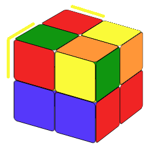

The original Rubik's cube is the 3x3 cube. So I think you either already know how to solve a 3x3 cube
or you will learn how to solve a 3x3 cube, but you start from here because you think a 2x2 is easier.
If you already know how to solve a classic 3x3 Rubik's cube, well, you will know how to solve a 2x2 in
just one sentence.
A 2x2 cube is a 3x3 cube with only corners!
If you do not know how to solve a 3x3 cube, I suggest you start from there. However, if you just want to know how to solve a 2x2 cube and do not care about the 3x3, follow the steps below, and you'll be able to solve it in no time.
STEP1: SOLVE THE WHITE LAYER


Our first step is to make the white layer, but not only that. We also need to make sure that the colors on the sides are right. We do not need any formula for this step. Practice, you will find the way.
Now we rotate the cube 180 degrees so the white layer is on the bottom.
STEP2: SOLVE THE TOP YELLOW LAYER
Step2.1 Make the Top Layer All Yellow
If there are 3 cubies whose colors are not right (not yellow).
We call these situations fish patterns (name adapted from situation in the 3x3) . In this case, on the up-layer, there is one yellow color, and the other three colors are not right.
Let's turn the cube left or right so that the yellow color is on a up-back-right or up-back-left position and make sure that
there is a color yellow on the back-layer (See the figures below).
(a) If the yellow square on the up-layer belongs to a up-back-left cubie (the yellow color on the back belongs to a up-back-right cubie)
we call it a counter clockwise fish pattern.
(b) If the yellow square on the up-layer belongs to a up-back-right cubie (the yellow color on the back belongs to a up-back-left cubie)
we call it clockwise fish pattern.



For the counter-clockwise fish pattern, try the
Counter-Clockwise Fish formula:
For the clockwise fish pattern, try the Clockwise Fish formula:
Then all the colors on the top layer will be yellow. Notice that the two formulas are the mirror images of each other.
If there are 2 or 4 cubies whose colors are not right
In this case, we will still use the two formulas above, but we need to use them more than once. To apply the formula, we will first maneuver the cube so that the left-back-up cubie has the wrong color.
If there are 2 cubies whose colors aren't right, we maneuver the cube so that the back color (at the left-back-up position) is yellow; if there are 4 coubies whose colors aren't right, we maneuver the cube so that the color of the cubie at the left-back-up position is yellow. (So "2 back 4 left") Then, after applying either the clockwise fish formula or the counter-clockwise formula, we will get the fish pattern.
From the formula above, we see that the top layer is always turning counter clockwise. That's why we call it counter-clockwise fish.
From the formula above, we see that the top layer is always turning clockwise. That's why we call it clockwise fish.
Now that the up layer colors are all yellow (Fig 3.30), our next step is to correct the corner pieces' order.
Step2.2 Rearrange the Up Layer's Corner Pieces
Here we have two cases:
(a) There is a side whose two corner pieces on the side are the same color.
(b) We could not find a side whoes two corner pieces have the same color.


For case (a) we put the side whose two corner-pieces have the same color on the right , then we rotate the cube so so that the yellow is facing us . After that we apply the R2D2 formula.
After applying the formula, do not forget to rearrange the cube so the yellow face is the up layer again. For case (b) ( you cannot find the side whose two corners having same color), you just need to use the R2D2 formula directly (it does not matter which side is on the right, but the yellow should still face you .) After applying the formula, you should be able find the side whose two corner's color are same. It is case (a).
That's it. You have solve the 2x2 Rubik's cube.